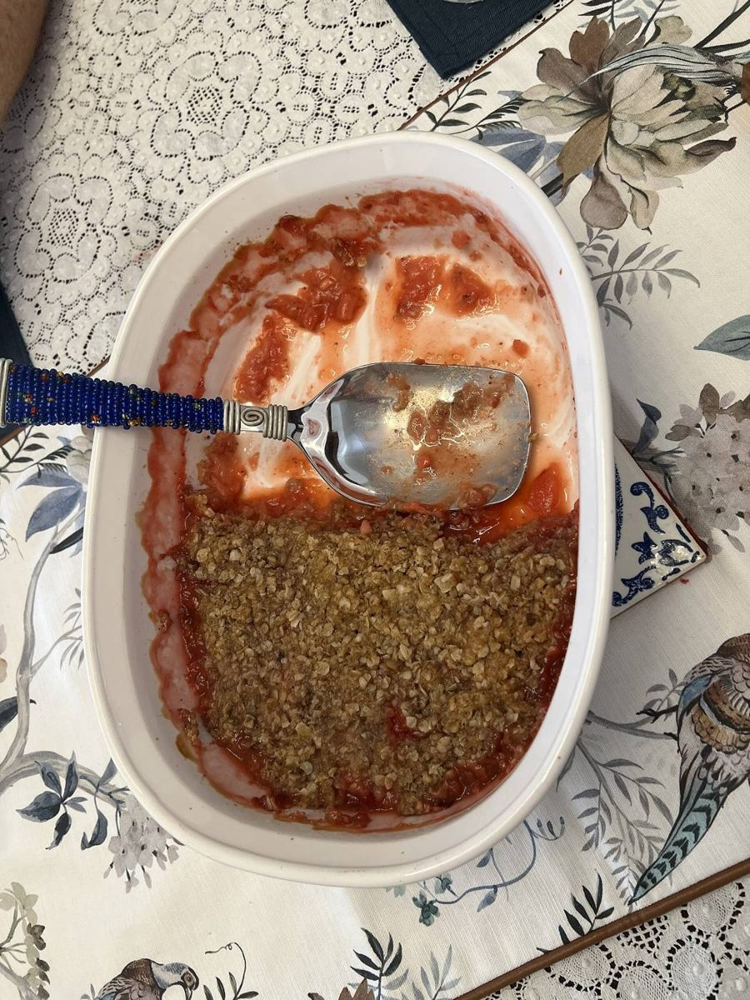
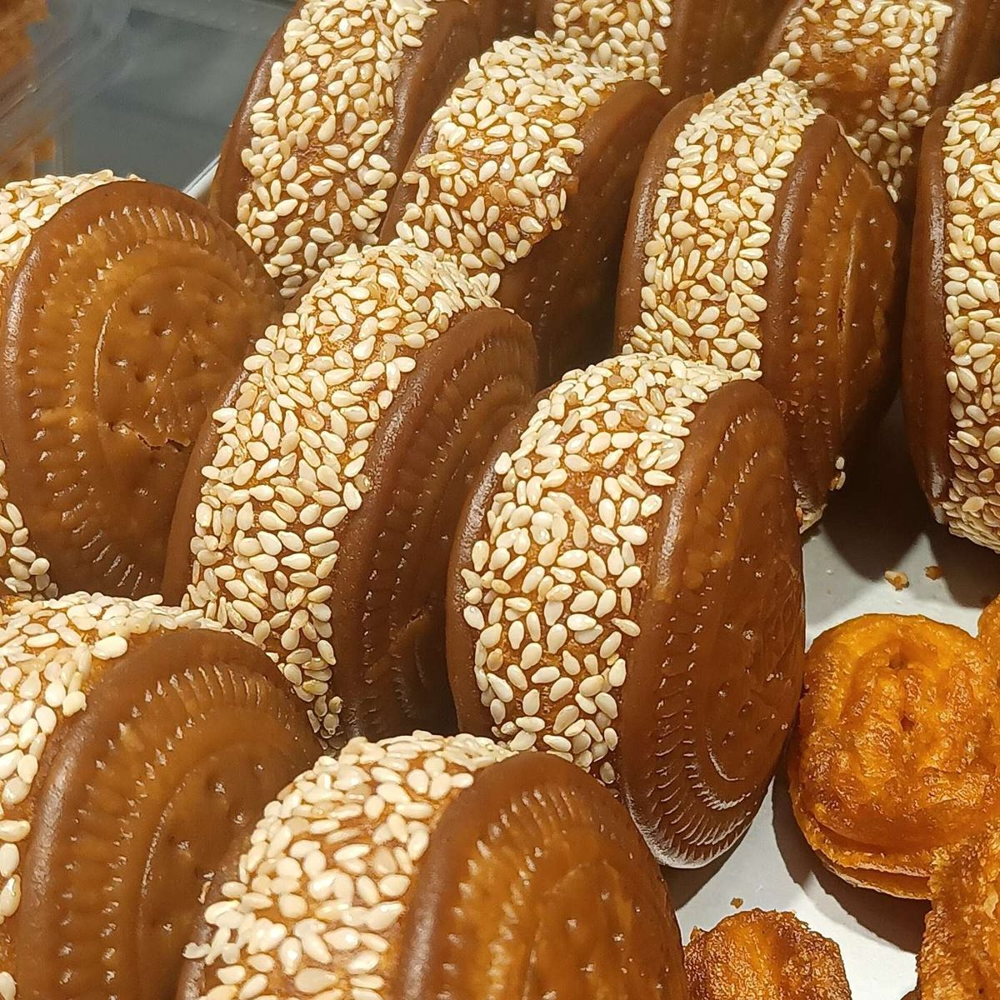

About
隠れ家的な、小さなお店
お店のInstagramには、「家庭料理を中心に隠れ家的な小さなお店です。グルテンフリーの米粉を使用したケーキ等もご用意してあります。」と紹介されています。モーニングセットの時間として9:30〜11:00の記載もあります。
このサイトは、その紹介をもとに「台所のぬくもりと、やさしい甘さ」を色と写真で表現しました。店名の意味や由来は確認できていません。
写真はすべてフリー素材のイメージで、お店の実際の様子ではありません。






Menu
家庭料理と、米粉のケーキ
確認できているのは次の方向性です。品目・価格の詳細は準備中です。


Voice
口コミ(イメージ例)
以下は制作側が作った例で、実在のお客様の声ではありません。
イメージ例家庭料理というところに惹かれました。ほっとできるお昼になりそうです。
イメージ例米粉のケーキがあると聞いて気になっています。小麦を控えている友人とも行きたいです。
イメージ例隠れ家のような小さなお店という紹介が素敵でした。朝の時間にゆっくり訪ねてみたいです。
Access
アクセス
| 所在地 | 〒416-0915 静岡県富士市富士町８−８ |
|---|---|
| 電話 | 準備中 |
| 営業時間 | 準備中(モーニングセットは9:30〜11:00の記載あり) |
| 定休日 | 準備中 |
| @cafe_garbo_ |